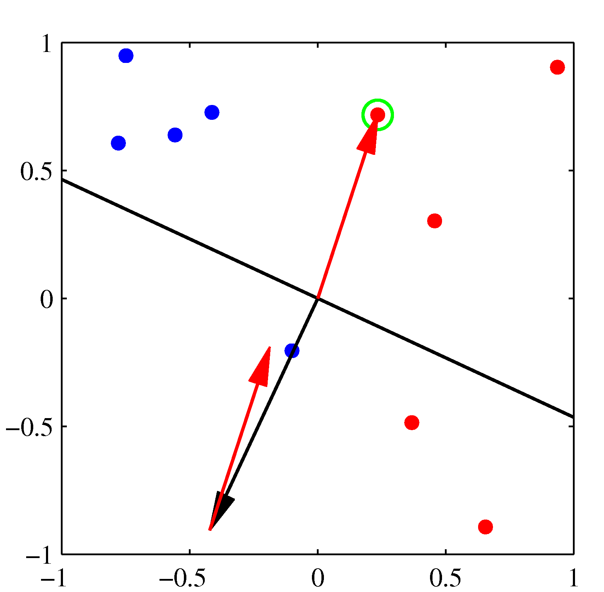
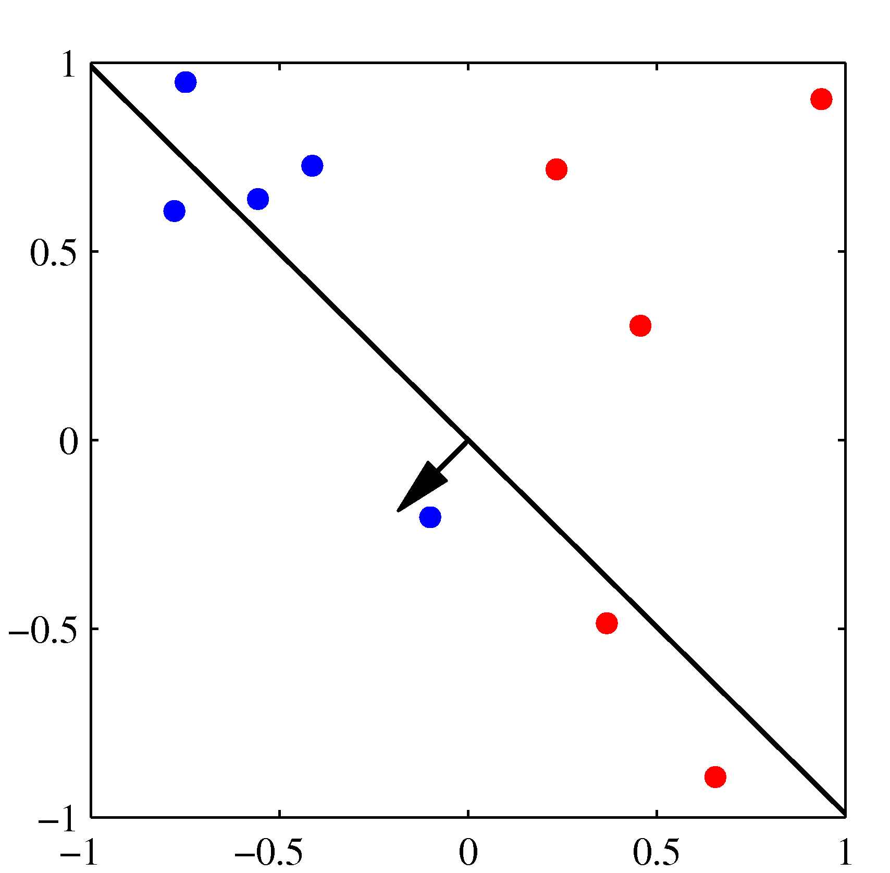
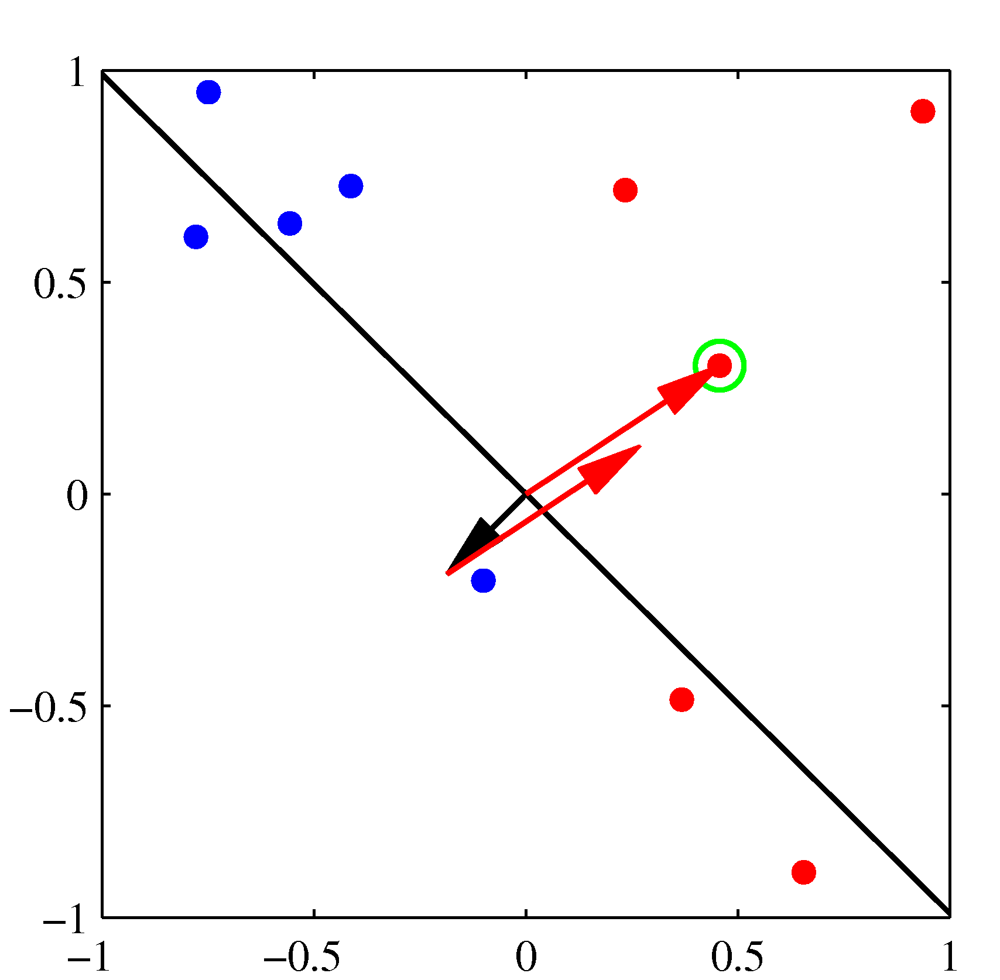
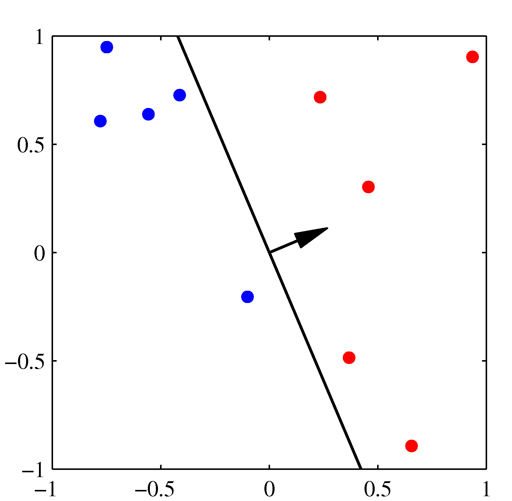

This section captures the main principles of the perceptron algorithm which is the essential building block for neural networks.
Architecture of a single neuron
The perceptron algorithm invented 60 years ago by Frank Rosenblatt in Cornell Aeronautical Laboratory. Neural networks are constructed from neurons - each neuron is a perceptron with a specific activation function. A single neuron is itself capable of learning – indeed,various standard statistical methods can be viewed in terms of single neurons – so this model will serve as a first and simple example of a supervised neural network.


A single neuron has a number $n$ of inputs $x_i$ (note the figure is not compatible with this notation) and one output which we will here call $\hat{y}$. Associated with each input is a weight $w_i$ ($i = 1 ,\ldots, n$). The additional parameter $w_0$ of the neuron called a bias which we may view as being the weight associated with an input $x_0$ that is permanently set to 1. The single neuron is a feedforward device – the connections are directed from the inputs to the output of the neuron. Feedforward neural networks are called Multi-Layer Perceptrons (MLPs).
What does the perceptron compute? First, in response to the imposed inputs $\mathbf{x}$, we compute the activation of the neuron,
$$a = \sum_{i=0}^n w_i x_i = \mathbf{w}^T \mathbf{x}$$
Second, the output (also called the activity of the neuron) is produced by passing the activation through a non linear activation function $\hat{y} = g(a)$. The activation function of the perceptron is the step function - we will cover more of such functions in the treatment of neural networks.
$$g(a) = \begin{cases}1 & \text{if }\ a \ge 0, \\ -1 & \text{otherwise}\end{cases}$$
Perceptron Learning Algorithm
The algorithm is derived from the application of the SGD to a suitably chosen loss function. The loss function can be easily designed if we start thinking about the class labels as belonging to the set ${+1,-1}$ (rather than the more usual ${0,1}$) and considering the value of the products $\mathbf{w}^T x_j y_j$. If there are no classification errors for the chosen non-linear activation function above such products will result into positive numbers irrespectively of the class. For these cases we assign zero to the loss function. If there are errors however, these products will be negative and the sum of all these negative product terms we must maximize - or equivalently minimize the negative of such loss as below:
$$L(\mathbf{w}) = - \sum_{j: \hat{y_j} \ne y} \mathbf{w^T}x_j y_j$$
We will find the $\mathbf{w}$ that minimize such loss using the familiar Stochastic Gradient Descent algorithm. Noting that the gradient of the loss function at $\mathbf{w}$ is $x_j y_j$ we can write the SGD algorithm as follows:
Let $t$ denote the iteration index and $r$ the learning rate.
Initialize the weights and the threshold. Weights may be initialized to zero or to a small random value.
For each example in our training set, perform the following steps over the input $\mathbf{x}_j$ and desired output $y_j$:
$$\hat{y}_j(t) = g[\mathbf{w}(t)^T \mathbf{x}_j]$$
Update the weights:
$$w_i(t+1) = w_i(t) + r (y_j - \hat y_j(t)) x_j$$
for all features $0 \leq i \leq n$.
The updated weights are immediately applied to a pair in the training set, and subsequently updated, rather than waiting until all pairs in the training set have undergone these steps.
 Initial parameter vector $\mathbf w$ shown as a black arrow together with the corresponding decision boundary (black line), in which the arrow points towards the decision region which classified as belonging to the red class. The data point circled in green is misclassified and so its feature vector is added to the current weight vector, giving the new decision boundary shown in the plot below.

 The next misclassified point to be considered, indicated by the green circle, and its feature vector is again added to the weight vector giving the decision boundary shown in the plot below for which all data points are correctly classified. 
NOTE: For offline learning, the second step may be repeated until the iteration error $\frac{1}{s} \sum_{j=1}^s |y_j - \hat{y}_j(t)| $ is less than a user-specified error threshold $\gamma $, or a predetermined number of iterations have been completed, where “s” is the size of the training set.
The perceptron is a linear classifier, therefore it will never get to the state with all the input vectors classified correctly if the training set D is not linearly separable, i.e. if the positive examples cannot be separated from the negative examples by a hyperplane. In this case, no “approximate” solution will be gradually approached under the standard learning algorithm, but instead learning will fail completely. Even in the case of linearly separable datasets, the algorithm may exhibit significant variance while it is executing as previously correctly classified examples may “fall” into the wrong decision region by an update that considers a currently misclassified example.
Further, the perceptron solution will depend on the initial choices of the parameters as well as the order of the training dataset presented. Support Vector Machines avoid such pitfalls which can motivate the question why we insisted on learning the perceptron algorithm: both architecturally and the functionally the linear combination of features followed by a non-linearity is the fundamental building block of far more complicated neural networks.
Perceptron performance
For a live demo of perceptron performance see the single neuron example for separable datasets in Tensorflow Playground